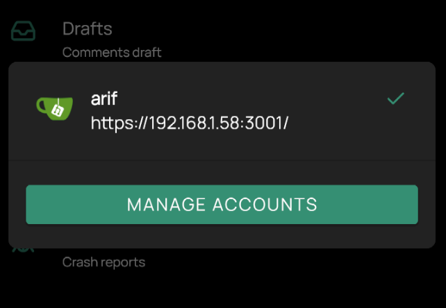
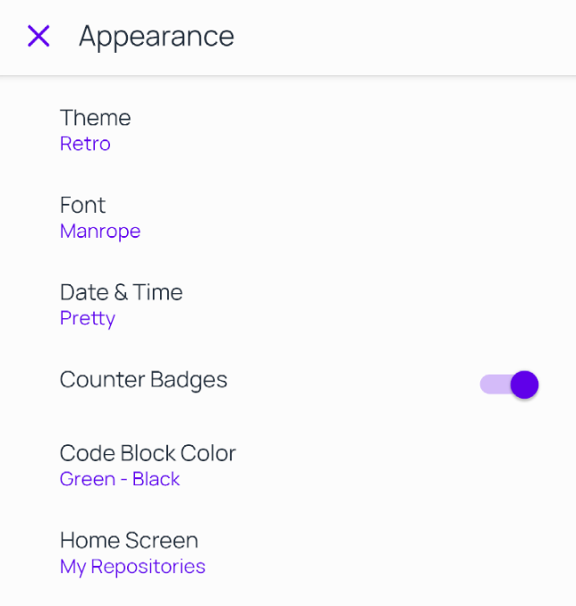

GitNex 3.1.0 released
Aug 22, 2020 by @mmarif
We are proud to announce the release of GitNex 3.1.0 with multiple accounts support, new theme and more.
1. Multiple accounts support
GitNex now supports multiple accounts where user can easily add and remove accounts.

Multiple Accounts Support
2. New Retro theme
In 3.1.0 we have introduced new retro theme.

Retro Theme
3. Markdown support in file viewer
4. Repository forks
5. Delete OR Edit a file
6. Create drafts per edit and improve it’s UI
7. New Progress indicators
8. Copy repo / org / issue comment url to clipboard